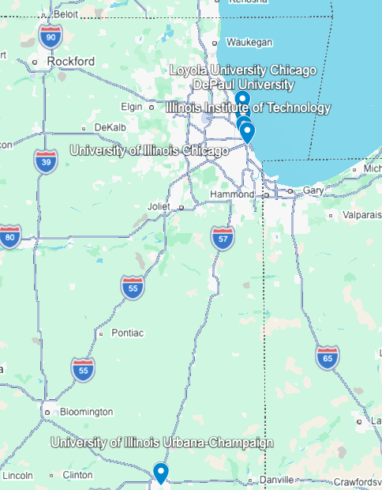

Hello! My name is Adam Yan, and I am currently a senior at Jones College Prep who is applying to colleges. This page will talk about what I want to study in college and why I want to study it.
I want to double major in accounting and business analytics because I think that having the very technical skills of analytics in combination with accounting, which would allow me to work in many different fields because all companies need somebody to manage their finances, would, in my opinion, allow me to have a strong career that allows me to adapt to future changes.
In addition, I have taken business courses at City Colleges of Chicago through dual enrollment, and found all of my classes interesting. I also felt that the coursework was manageable and something that I could see myself studying for the next few years in college, as well as a career path that I feel would be a good fit for me.
**This list is not exhaustive, since I may apply to more or less schools.
Below is a map with the pins of some of the schools I'm applying to.
